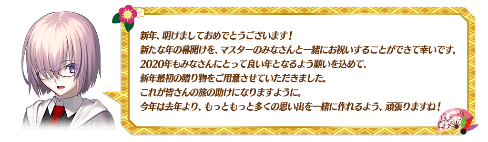
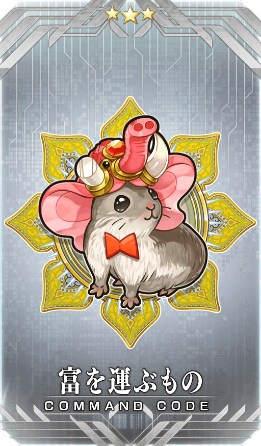
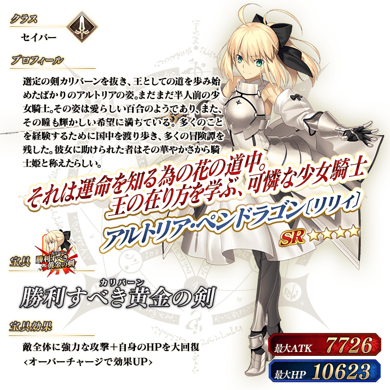

◆舉辦期間◆
2019年12月31日(二) 23:00～2020年1月10日(五) 11:59
※本頁面皆為開發中圖片。會有與實際圖片相異的情況。
◆領取期間◆
2020年1月1日(三) 3:00～1月4日(六) 2:59
上述期間中，在初次登入至「Fate/Grand Order」的時間點，贈予至禮物箱。
◆贈送內容◆
聖晶石 30個
◆贈送對象◆
所有的御主對象
※新御主必須推進至通過「特異點F 炎上汙染都市 冬木 第3節 進行度1」。
※期間內未登入的話無法領取。
※禮物只能領取1次。
為了記念「2020年新年宣傳活動」的舉辦，今年也實施新年三天限定的特別登入獎勵！
本次贈送聖杯做為從1月3日(五) 3:00的登入獎勵！
◆舉辦期間◆
2020年1月1日(三) 3:00～1月4日(六) 2:59
※無關登入的次數，領取對應登入時間的禮物。

◆プレゼント對象◆
所有的御主對象
※新御主必須推進至通過「特異點F 炎上汙染都市 冬木 第3節 進行度1」。
| 登入時間 | 贈送內容 | ||
|---|---|---|---|
| 1月1日(三) 3:00～ 1月2日(四) 2:59 |

|
稀有稜鏡 1個 | |
| 1月2日(四) 3:00～ 1月3日(五) 2:59 |

|
英靈結晶・流星之芙芙ALL★4(HP) 1張 | |

|
英靈結晶・日輪之芙芙ALL★4(ATK) 1張 | ||
|
1月3日(五) 3:00～ 1月4日(六) 2:59 |
聖杯 1個 | ||
※禮物各自只限領取1次。
在官方推特上方固定顯示的「2020年新年宣傳活動舉辦！」推特轉推數，於下述的期間內達成10萬轉推的話，會向所有的御主贈送「★4(SR)独楽の舞い踊り」與2,020萬QP！
■「Fate/Grand Order」官方推特
@fgoproject
◆舉辦期間◆
2020年1月1日(三) 於官方推特上的推特刊載後～1月3日(五) 22:59
◆配發預定日◆
2020年1月4日(六) 3:00～1月5日(日) 2:59的期間中，在初次登入的時間點，贈予至禮物箱。
◆贈送對象◆
所有的御主對象
※在舉辦期間內達成10萬轉推的情況，新御主必須在配發預定最終日1月5日(日) 2:59前推進至通過「特異點F 炎上汙染都市 冬木 第3節 進行度1」。
| 達成目標(轉推數) | 達成報酬 | ||
|---|---|---|---|
| 10萬轉推 | ★4(SR)独楽の舞い踊り | ||

|
2,020萬QP | ||
※在舉辦期間內未到達達成目標轉推數及期間內未登入的情況，無法領取達成報酬。
◆新年限定概念禮裝◆

|
★★★★SR |
下述的期間中，在「御主任務」的「限定」標籤內以期間限定追加「【2020年新年宣傳活動】任務」。
通過所有任務的話，可得到包含指令紋章「★3(R)富を運ぶもの」和指令卡強化素材「獸之足跡」等豪華報酬！
◆舉辦期間◆
2019年12月31日(二) 23:00～2020年1月10日(五) 11:59
◆領取期間◆
2019年12月31日(二) 23:00～2020年1月17日(五) 11:59
◆2020年新年宣傳活動指令紋章◆
|  |
★★★R |
◆追加任務◆
| 任務名稱 | 任務達成報酬 | |
|---|---|---|
|
【2020年新年宣傳活動】 擊倒3位『嬌小』從者(身長150㎝以下) |
通過各任務
 聖晶石 1個
聖晶石 1個
|
|
|
【2020年新年宣傳活動】 編成1位以上持有『秩序』屬性的從者，通過3次關卡 |
||
|
【2020年新年宣傳活動】 擊倒3名『和風』的從者或人類的敵人 |
||
|
【2020年新年宣傳活動】 擊倒3名持有『天』之力的敵人 |
||
|
【2020年新年宣傳活動】 靠戰利品收集1個『紅色』道具 |
||
|
【2020年新年宣傳活動】 靠戰利品收集1個『白色』道具 |
||
|
【2020年新年宣傳活動】 靠戰利品收集1個『珠』的道具 |
||
|
【2020年新年宣傳活動】 通過3次『山』的自由關卡 |
||
|
【2020年新年宣傳活動】 擊倒3位『幸運A+』的從者 |
||
|
【2020年新年宣傳活動】 通過全部新年限定任務 |
|
聖晶石 1個 |

|
獸之足跡 1個 | |
| ★3(R)富を運ぶもの 1張 | ||
※請注意舉辦期間與領取期間有所差異。 ※請注意與每週日23:00更新的普通任務(Weekly)不同欄位，超過領取期間的話無法入手報酬。 ※就算達成「【2020年新年宣傳活動】任務」，也不會計算在普通任務(Weekly)的任務進行度。 ※根據主線關卡的進行度會有無法達成「【2020年新年宣傳活動】任務」的情況。
◆得到新年限定概念禮裝EXP卡「窮鼠」吧！◆
做為「2020年新年宣傳活動」限定的報酬，能入手可大幅強化概念禮裝的EXP卡！
請務必藉此機會，強化喜愛的概念禮裝吧！
在迦勒底之門內每日出現的關卡「蒐集種火」的AP消耗量以期間限定變成1/2！
◆舉辦期間◆
2019年12月31日(二) 23:00～2020年1月10日(五) 11:59
◆對象關卡◆
蒐集種火<槍・殺篇>初級、中級、上級、超級
蒐集種火<剣・騎篇>初級、中級、上級、超級
蒐集種火<弓・術篇>初級、中級、上級、超級
蒐集種火<隨機篇>初級、中級、上級、超級
下述的期間中，在進行從者及概念禮裝的強化時，大成功(經驗值2倍加成)・極大成功(經驗值3倍加成)發生機率以期間限定變成2倍！
請務必藉此機會強化喜愛的從者和概念禮裝吧！
◆舉辦期間◆
2019年12月31日(二) 23:00～2020年1月10日(五) 11:59
下述的期間中，主線關卡第1部(從特異點F到終局特異點)與第2部(從第1章到第4章)的AP消耗量變成1/4！(就算在戰鬥中撤退的情況也會是同様的消耗量)
尚未通過主線關卡的御主，請務必藉此機會通過吧！
◆舉辦期間◆
2019年12月31日(二) 23:00～2020年1月31日(五) 22:59
◆對象關卡◆
主線關卡第1部(從特異點F到終局特異點)
主線關卡第2部(從第1章到第4章)
※現在主線關卡第2部 第3章以前的AP消耗量為永久變成1/2的狀態。因此，宣傳活動結束後，該主線關卡的AP消耗量會是1/2。 ※請注意1.5部、自由關卡為對象外。


下述的期間中，在「御主任務」的「限定」標籤內以期間限定追加「【主線關卡通過聲援】任務」。
通過所有任務的話，可得到聖晶石30個(聖晶石召喚最大11次份)！
※(聖晶石召喚最大11次份)限在同一個聖晶石召喚進行的情況。
◆舉辦期間◆
2019年12月31日(二) 23:00～2020年1月31日(五) 22:59
◆領取期間◆
2019年12月31日(二) 23:00～2020年2月7日(五) 22:59
◆追加任務◆
| 任務名稱 | 任務達成報酬 | |
|---|---|---|
|
【主線關卡通過聲援】
通過『終局特異點 第1節』 |
|
聖晶石 5個 |
|
【主線關卡通過聲援】
通過『Lostbelt No.1 第1節』 |
|
聖晶石 5個 |
|
【主線關卡通過聲援】
通過『Lostbelt No.2 第1節』 |
|
聖晶石 5個 |
|
【主線關卡通過聲援】
通過『Lostbelt No.3 第1節』 |
|
聖晶石 5個 |
|
【主線關卡通過聲援】
通過『Lostbelt No.4 第1節』 |
|
聖晶石 5個 |
|
【主線關卡通過聲援】
通過『Lostbelt No.5 第1節』 |
|
聖晶石 5個 |
※請注意舉辦期間與領取期間有所差異。 ※請注意與每週日23:00更新的普通任務(Weekly)不同欄位，超過領取期間的話無法入手報酬。 ※就算達成「【主線關卡通過聲援】任務」，也不會計算在普通任務(Weekly)的任務進行度。 ※已經通過主線關卡的玩家，也同樣地能領取通過報酬。
「★4(SR)阿爾托莉亞・潘德拉剛〔Lily〕」在友情點數召喚登場！
在下述介紹關於「★4(SR)阿爾托莉亞・潘德拉剛〔Lily〕」的詳情。
◆追加時間◆
2019年12月31日(二) 23:00～
※追加到友情點數召喚「★4(SR)阿爾托莉亞・潘德拉剛〔Lily〕」會永久被抽出。 ※請注意靈基變還「★4(SR)阿爾托莉亞・潘德拉剛〔Lily〕」時，不會獲得稀有稜鏡。 ※請注意就算入手「累計6位以上」「★4(SR)阿爾托莉亞・潘德拉剛〔Lily〕」的情況，也不會獲得稀有稜鏡。

翻新「★5(SSR)阿爾托莉亞・潘德拉剛(Saber)」「★4(SR)阿爾托莉亞・潘德拉剛〔Lily〕」的戰鬥動作及寶具演出！
在「Fate/Grand Order」官方網站內的公告中，以影片公開寶具演出，敬請確認。
◆翻新實施時間◆
2019年12月31日(二) 23:00～
【阿爾托莉亞・潘德拉剛(Saber)】
【阿爾托莉亞・潘德拉剛〔Lily〕】
以期間限定舉辦楊貴妃的體驗關卡！
可迎接「★5(SSR)楊貴妃」做為支援成員，挑戰期間限定的關卡！
別錯過體驗從者技能與寶具的機會！
※請注意在楊貴妃體驗關卡沒有文字冒險部份。
◆楊貴妃體驗關卡舉辦期間◆
2019年12月31日(二) 23:00～2020年1月15日(三) 11:59
◆開放條件◆
滿足以下條件的御主才能參加
・通過「特異點F 炎上汙染都市 冬木」
◆關卡通過報酬◆
呼符 1張

自2019年12月31日(二) 23:00，在起跑衝刺宣傳活動的登入獎勵，以期間限定追加特別獎勵！
下述期間中，第3天、第5天、第6天的聖晶石的個數2倍、第7天的獎勵變成2倍，以期間限定追加聖晶石60個與呼符10張(聖晶石召喚最大33次份)。
※(聖晶石召喚最大33次份)限在同一個聖晶石召喚進行的情況。
◆舉辦期間◆
2019年12月31日(二) 23:00～2020年1月15日(三) 2:59
◆起跑衝刺登入獎勵的內容◆
| 總登入天數 | 入手登入獎勵 |
|---|---|
| 第1天 |
聖晶石 2個 呼符 5張 友情點數 2,000pt 10萬QP 睿智的猛火ALL★4(SR) 20張 黃金果實 1個 |
| 第2天 |
聖晶石 3個 呼符 5張 友情點數 2,000pt 10萬QP 睿智的猛火ALL★4(SR) 20張 黃金果實 1個 |
| 第3天 |
【期間限定增量】 聖晶石 10個 呼符 5張 友情點數 2,000pt 10萬QP 睿智的猛火ALL★4(SR) 20張 黃金果實 1個 |
| 第4天 |
聖晶石 7個 友情點數 2,000pt 10萬QP 睿智的猛火ALL★4(SR) 20張 黃金果實 1個 |
| 第5天 |
【期間限定增量】 聖晶石 20個 友情點數 2,000pt 10萬QP 睿智的猛火ALL★4(SR) 20張 黃金果實 1個 |
| 第6天 |
【期間限定增量】 聖晶石 30個 友情點數 2,000pt 10萬QP 睿智的猛火ALL★4(SR) 20張 黃金果實 1個 |
| 第7天 |
【期間限定增量】 聖晶石 60個 呼符 20張 友情點數 4,000pt 200萬QP 睿智的猛火ALL★4(SR) 40張 黃金果實 20個 |
| 第8天 |
聖晶石 5個 友情點數 2,000pt 10萬QP 睿智的猛火ALL★4(SR) 20張 黃金果實 1個 |
| 第9天 |
聖晶石 7個 友情點數 2,000pt 10萬QP 睿智的猛火ALL★4(SR) 20張 黃金果實 1個 |
| 第10天 |
聖晶石 9個 友情點數 2,000pt 10萬QP 睿智的猛火ALL★4(SR) 20張 黃金果實 1個 |
| 第11天 |
聖晶石 12個 友情點數 2,000pt 10萬QP 睿智的猛火ALL★4(SR) 20張 黃金果實 1個 |
| 第12天 |
聖晶石 15個 友情點數 2,000pt 10萬QP 睿智的猛火ALL★4(SR) 20張 黃金果實 1個 |
| 第13天 |
聖晶石 25個 友情點數 2,000pt 10萬QP 睿智的猛火ALL★4(SR) 20張 黃金果實 1個 |
| 第14天 |
聖晶石 50個 呼符 10張 友情點數 2,000pt 100萬QP 睿智的猛火ALL★4(SR) 20張 黃金果實 10個 |
※登入獎勵會在每天3:00配發。 ※表格中的紅字為期間限定的特別獎勵。 ※在舉辦期間內未進行第7天登入的情況，無法領取2倍的獎勵。
對一定期間未登入的御主對象，以期間限定舉辦「回歸登入獎勵」。
在下述期間中，7天內連續登入的話，贈送聖晶石60個(聖晶石召喚最大22次份)的聖晶石與對從者的養成有用的各種道具！
※(聖晶石召喚最大22次份)限在同一個聖晶石召喚進行的情況。
◆舉辦期間◆
2019年12月31日(二) 23:00～2020年1月15日(三) 2:59
◆贈送對象◆
滿足以下所有條件的御主對象
・2019年12月1日(日) 23:00～12月31日(二) 22:59的期間未進行登入
・2020年1月14日(二) 2:59前通過「特異點F 炎上汙染都市 冬木」
※上述時間前，在管理室(ターミナル)畫面的關卡橫幅必須要有「CLEAR」的文字顯示。
【回歸登入獎勵合計】 ・聖晶石 60個(聖晶石召喚最大22次份) ・友情點數 合計14,000pt(友情點數召喚70次份) ・睿智的猛火ALL★4(SR) 16張 ・黃金果實 16個
◆回歸登入獎勵的內容◆
| 登入次數 | 贈送內容 |
|---|---|
| 第1次 |
聖晶石 1個 友情點數 2,000pt 睿智的猛火ALL★4(SR) 1張 黃金果實 1個 |
| 第2次 |
聖晶石 3個 友情點數 2,000pt 睿智的猛火ALL★4(SR) 1張 黃金果實 1個 |
| 第3次 |
聖晶石 5個 友情點數 2,000pt 睿智的猛火ALL★4(SR) 1張 黃金果實 1個 |
| 第4次 |
聖晶石 7個 友情點數 2,000pt 睿智的猛火ALL★4(SR) 1張 黃金果實 1個 |
| 第5次 |
聖晶石 9個 友情點數 2,000pt 睿智的猛火ALL★4(SR) 1張 黃金果實 1個 |
| 第6次 |
聖晶石 15個 友情點數 2,000pt 睿智的猛火ALL★4(SR) 1張 黃金果實 1個 |
| 第7次 |
聖晶石 20個 友情點數 2,000pt 睿智的猛火ALL★4(SR) 10張 黃金果實 10個 |
※第1天的回歸登入獎勵會在2019年12月31日(二) 23:00配發。 ※之後的的回歸登入獎勵會在每天3:00配發。 ※最多能領取7次，但根據開始遊戲的時間點，可能無法到此上限。
可獲得於「2019年新年宣傳活動」登場的魔術禮裝「晴れの新年」的「晴れの新年獲得關卡」以期間限定復刻！
舉辦期間中，通過在迦勒底之門內出現的「魔術禮裝關卡・晴れの新年」後，可入手魔術禮裝「晴れの新年」。
◆舉辦期間◆
2019年12月31日(二) 23:00～2020年1月10日(五) 11:59
◆參加條件◆
滿足以下條件的御主才能參加
・通過「特異點F 炎上汙染都市 冬木」
另外從舉辦期間結束後的1月10日(五) 12:00，在達文西工房的「稀有稜鏡交換」追加晴れの新年獲得關卡。
◆追加時間◆
2020年1月10日(五) 12:00～
◆追加道具(常駐)◆
晴れの新年獲得關卡
| 追加道具 | 能交換次數 | 1次交換所需的 稀有稜鏡數 |
|---|---|---|
| 晴れの新年獲得關卡 | 1次 | 5個 |
※已經持有魔術禮裝「晴れの新年」的情況，不會出現晴れの新年獲得關卡。 ※請注意在晴れの新年獲得關卡沒有文字冒險部份。
以期間限定在達文西工房的「魔力稜鏡交換」追加下述的道具。
◆道具交換期間◆
2019年12月31日(二) 23:00～2020年1月10日(五) 11:59
| 追加道具 | 能交換次數 | 1次交換所需的 魔力稜鏡數 |
|
|---|---|---|---|
|
【2020年新年限定】 壓歲錢福袋2020 ※關於封入物的詳情在此 |
1次 | 20個 | |
|
【2020年新年限定】 概念禮裝EXP卡★4(SR)窮鼠 |
10次 | 20個 | |

|
【2020年新年限定】 Quick紋章開啟器 |
3次 | 50個 |

|
【2020年新年限定】 Arts紋章開啟器 |
3次 | 50個 |

|
【2020年新年限定】 Buster紋章開啟器 |
3次 | 50個 |

|
【2020年新年限定】 紋章移除器 |
3次 | 100個 |

|
【2020年新年限定】 呼符 |
10次 | 10個 |

|
【2020年新年限定】 睿智的猛火ALL★4(SR)10張組 |
10次 | 20個 |

|
【2020年新年限定】 英靈結晶・星之芙芙ALL★3(HP) |
30次 | 5個 |

|
【2020年新年限定】 英靈結晶・太陽之芙芙ALL★3(ATK) |
30次 | 5個 |
▶關於壓歲錢福袋2020
可在達文西工房的「魔力稜鏡交換」以期間限定交換的「壓歲錢福袋2020」，包含以下的道具。
可開放絆等級上限的道具「迦勒底的夢火」和可大幅強化概念禮裝的新年限定EXP卡也登場！
◆「壓歲錢福袋2020」封入物一覧◆
・迦勒底的夢火 1個
・概念禮裝EXP卡★4(SR)窮鼠 1張
・1,000萬QP
・友情點數 10,000pt
※迦勒底的夢火、QP、友情點數會直接賦予至持有道具。
不會送至禮物箱。
以期間限定在達文西工房的「稀有稜鏡交換」追加下述的道具。
◆道具交換期間◆
2019年12月31日(二) 23:00～1月10日(五) 11:59
| 追加道具 | 能交換次數 | 1次交換所需的 稀有稜鏡數 |
|
|---|---|---|---|

|
【2020年新年限定】 迦勒底的夢火 |
1次 | 3個 |
|
|
【2020年新年限定】 紋章移除器 |
3次 | 1個 |

|
【2020年新年限定】 傳承結晶 |
1次 | 5個 |
|
|
【2020年新年限定】 英靈結晶・流星之芙芙ALL★4(HP) |
1次 | 3個 |
|
|
【2020年新年限定】 英靈結晶・日輪之芙芙ALL★4(ATK) |
1次 | 3個 |

|
【2020年新年限定】 友情點數 20,000pt |
5次 | 1個 |
為了記念「2020年新年宣傳活動」的舉辦，在達文西工房的「稀有稜鏡交換」常駐追加於「2019年新年宣傳活動」登場的概念禮裝「★4(SR)ニューイヤー・グリーティング」。
◆追加時間◆
2019年12月31日(二) 23:00～

|
★★★★SR |
◆追加道具(常駐)◆
| 追加道具 | 能交換次數 | 1次交換所需的 稀有稜鏡數 |
|---|---|---|
| ★4(SR)ニューイヤー・グリーティング | 1次 | 3個 |
※追加到「稀有稜鏡交換」的「★4(SR)ニューイヤー・グリーティング」做為常駐，沒有交換期限。 ※關於已經持有「★4(SR)ニューイヤー・グリーティング」的玩家，剩餘次數的顯示會是「0次」，無法交換。 ※在「稀有稜鏡交換」入手「★4(SR)ニューイヤー・グリーティング」會是最高等級。
其他還有，期間限定「福袋召喚2020(職階別)」和期間限定「New Year 2020 Pick Up召喚(每日交替)」同時舉辦！
關於詳情，請自下述橫幅確認。
■「福袋召喚2020(職階別)」詳細情報

■「New Year 2020 Pick Up召喚(每日交替)」詳細情報